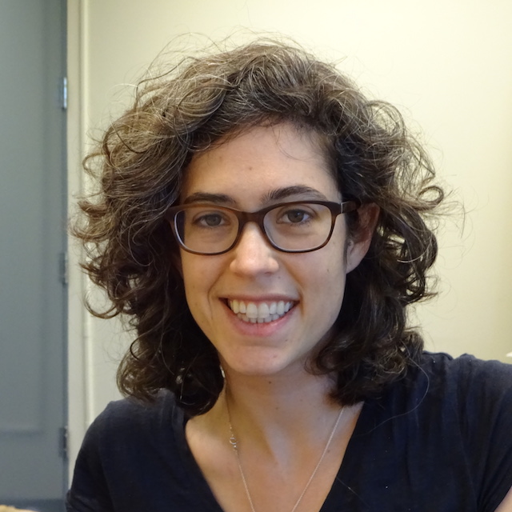

[+]
[–]

I am a PhD candidate in comparative literature at the University of Texas at Austin. I am interested in archives, cultural studies, book history, and digital humanities. My current research focuses on the circulation of historical documents from early colonial and pre-colonial Mexico.
I manage the
Reading the First Books project at LLILAS Benson Latin American Studies and Collections.
Email:
halperta@gmail.com
Curriculum Vitae
@hralperta
Scholarly Publishing
Articles
Machine Reading the Primeros Libros
Hannah Alpert-Abrams
Digital Humanities Quarterly. Forthcoming.
Representing the Social History of Early Modern Printed Objects
Hannah Alpert-Abrams
Scholarly Editing. May 2016.
An Unsupervised Model of Orthographic Variation for Historical Document Transcription
Dan Garrette and
Hannah Alpert-Abrams
Proceedings of NAACL 2016
[slides .pdf]
Unsupervised Code-Switching for Multilingual Historical Document Transcription
Dan Garrette,
Hannah Alpert-Abrams,
Taylor Berg-Kirkpatrick, and
Dan Klein
Proceedings of NAACL 2015
[slides .pdf]
Translating an Unreadable Novel: The Lost Steps in the United States
Pterodáctilo 11, Fall 2012
Scholarly Book Reviews
Sandro Jung and Stephen Colclough, eds. The History of the Book. Thematic Issue of the Yearbook of English Studies, no. 45.
SHARP News, Spring 2016
Book Review: Kathryn Burns, Into the Archive.
E3W Review of Books, Spring 2014.
Digital Projects
The Archaeology of a Book
An experimental approach to reading rare books in archival contexts. Published with Scalar. (Not reviewed)
Reading the First Books
A two-year, multi-university effort to develop tools for the automatic transcription of early modern printed books. Funded by the NEH Office of Digital Humanities.
Talks and Posters
Esta ãphibologia no ay ẽ latin: Machine reading linguistic
hybridity in the Primeros Libros
[+]
[–]
Hannah Alpert-Abrams
Tercer Encuentro de Humanidades Digitales [slides .pdf] [notes .pdf]
The Electronic Edition of Colonial and Nineteenth-Century Latin American Texts: New Tools, New Models for Collaboration (workshop panelist)
[+]
[–]
Hannah Alpert-Abrams
Latin American Studies Association 2016 [slides .pdf]
Workshop Description
This workshop brings together a diverse group of experts for a conversation designed to reveal new possibilities for collaboration on Digital Humanities projects within the fields of colonial and nineteenth-century Latin America. Hannah Alpert-Abrams of the University of Texas at Austin will speak on Ocular, an optical character recognition (OCR) tool that can read multilingual texts, including those involving indigenous languages. Nick Laiacona, founder of Performant Software Solutions, will discuss Juxta, a TEI-XML-based editing tool that provides an easy-to-use graphical interface and features for project management, including version control. Liz Grumbach, Project Manager for the Advanced Research Consortium and 18thConnect, will share her experiences creating communities to support the peer-review of electronic scholarship. Ralph Bauer of the University of Maryland will discuss the changes that are taking place at the Early Americas Digital Archive. This discussion is designed as a starting point for an ongoing conversation that could lead to new Digital Humanities initiatives involving members of LASA. [Session Organizer: Clayton McCarl]
Printed Books as Digital Textual Objects: the case of the Advertencias para los confessores de los Naturales
[+]
[–]
Hannah Alpert-Abrams
Modern Language Association 2016 [slides .pdf] [project website]
Abstract
The mass digitization of printed books has radically increased the accessibility and discoverability of historical documents from around the world. Due to the limitations of labor, costs, and technology, many of these digitization projects - like my own work with the Primeros Libros collection of sixteenth century Mexican printed books - have been forced through a scan-ocr-post pipeline that emphasizes and even exaggerates the centrality of the printed word in the historical record. This may come at the expense of the material evidence of what many call the ecology of the text: details of production, circulation, and use which disappear into the pixelated edges of the digital facsimile, or fall out of the digital edition altogether. In this paper I discuss a project to situate digitized copies of the Advertencias para los confessores de los Naturales (Tlatelolco, 1600) within their textual ecology by reading page scans alongside production records and provenance marks and by contextualizing them within digitally reconstructed libraries that cut across online collections. Through this project, I envision an approach to the editing of digital texts that treats the printed book as a dynamic textual object inscribed with traces of its movement through time and space.
Machine Reading in the Mexican Colonial Archive: OCR and the Primeros Libros
[+]
[–]
Hannah Alpert-Abrams
ADE STS Joint Conference 2015 [slides .pdf]
Abstract
This paper explores practical and theoretical challenges of automatically transcribing early colonial print documents. It stems from our work building an Optical Character Recognition (OCR) system for the Primeros Libros collection of digital facsimiles of books printed in the Americas before 1601. Using the "Advertencias para los confessores de los naturales" (1601) as a case study, I identify an analogous relationship between the codification of multilingual evangelical discourse in early colonial writing and the digitization of early modern text. I argue that this relationship reveals more than just the uneasy heritage of digital archival practices. It also suggests that the procedures of digitization obscure sites of messy cultural engagement - the relationships of the contact zone enacted on a digital, textual, postcolonial plane. How does the recognition of this relationship impact our editorial practices as we produce transcriptions of these early colonial documents?
Automatic Transcription in Colonial Contexts
Hannah Alpert-Abrams and Dan Garrette
TXDHC 2015 [poster .pdf]
Reading the Primeros Libros: from Archive to OCR
[+]
[–]
Hannah Alpert-Abrams and Dan Garrette
ACLA 2015 [slides .pdf]
Abstract
The PDF images of early American printed books in the Primeros Libros digital collection pose several challenges for Optical Character Recognition (OCR) systems. The Ocular system, designed by Taylor Berg-Kirkpatrick, Greg Durrett, and Dan Klein, jointly models the physical operation of hand-press printing and the language of the written document, allowing it to ‘learn’ to read early printed books. Ocular cannot, however, handle the diacritics and code switching prevalent in the American context. Working with PDF images of trilingual texts in Spanish, Latin, and Nahuatl, we set out to modify Ocular for use on the Primeros Libros collection. Our purpose was, to paraphrase Mary Louise Pratt, to make these texts read (by an online audience) and readable (by a computer).
In this paper, we turn a critical eye to our OCR system. The books in the Primeros Libros collection represent a new print technology that has often been seen as an apparatus of Spanish colonial rule; at the same time, they encode shifting relationships between church and state, between Europe and America, and between Spaniards and indigenous Mexican peoples. In this paper, we will describe how the OCR model transforms these original texts to create a new surface for textual engagement, and how this surface reflects back onto processes of transcription and translation underlying the original production of the Primeros Libros. Focusing specifically on textual code switching and the challenges that it has posed for OCR, We will consider how these technologies engage with processes of isolating and codifying indigenous languages and cultural practices.
From Archival Network to Digital Archive:
Digital Repatriation and the Advertencias para los Confessores de los Naturales
[+]
[–]
TXDHC 2014
Abstract
Digital repatriation, or the return of culturally significant texts to their site of origin in digital form, has become an increasingly common means of cultural exchange. Through these projects, local institutions are able to claim ownership over digital facsimiles of heritage objects, while websites provide near-global access to historical texts. As a result, these projects disrupt the geographically bounded archival networks through which these objects have long been preserved and contextualized. This project addresses this disruption by tracing the institutional history of four copies of the Advertencias para los Confessores de los Naturales (Mexico, 1600) and their digital facsimiles in the Primeros Libros project. An analysis of the archival context of these copies reveals the different roles that they have played in forming institutionally sanctioned historical narratives from Mexico City to Houston Texas, roles that are defined in part by the organizational systems of the libraries and in part by their geographical location. In contrast, I consider the digital manifestation of these copies in the Primeros Libros project, a collaborative enterprise seeking to digitize all books printed in America before 1601. As my analysis will show, this new context reasserts the centrality of printing technology in the Mexican colonial archive, emphasizing the material fragmentation of colonial history and also encouraging the reconstruction of a historical ideal from that fragmented past.
Hybrid Romances in Borges and Baudelaire
[+]
[–]
ACLA 2013
Abstract
Samuel Cramer, the anti-hero of Charles Baudelaire's early novella La Fanfarlo, is the product of a
German father and a Chilean mother: combined with a French education, this national hybridity produces
in him a hopeless romanticism. Thus Cramer embodies what Mary Louise Pratt calls the romanticism of
the contact zone, the possibility that European romanticism is an epidemic from across the Atlantic.
In Pratt's model, romanticism returns to the Americas through the early nineteenth-century travels and
travel writings of Alexander von Humboldt. Samuel Cramer resurfaces here too, in the unlikely figure
of Juan Dahlmann. Dahlmann, the protagonist of Jorge Luis Borges' short story El sur, is the Argentine
son of a German father and an American mother. Though on the surface this story is quite different, its
narrative runs parallel to that of La Fanfarlo. Like Cramer, in the end Dahlmann also suffers from a fatal
romanticism.
In this paper I will read El sur alongside La Fanfarlo to construct a transatlantic lineage of hybrid identities
and hybrid literatures. I will examine the oscillation between the modern and the romantic as an iterative
movement, from salon to city streets, from library to pampas, and from Baudelaire's Paris to Borges'
Buenos Aires.
In Memory and Archives
[+]
[–]
Collected writings from the "Memory and Archives" panel at the 2012 Graduate Association in Comparative Literature conference at the University of Texas at Austin.
Abstract
How do archives construct communities (and how do communities construct archives)?
In this paper, I talk about subversive, disappearing, and silent archives in Roberto Bolaño's Los detectives salvajes. In 1989, Roberto González Echevarría's Myth and Archive offered a definitive historiography of Latin American literature culminating in the "archival novel" of the "boom" era. This genre is characterized by the combination of a mythic or cyclical narrative structure with a more teleological narrative based in the archive — in a collection of canonical national and historical texts. Bolaño's novel can be read as a continuation of and a return to the "archival novel" because of the way in which it collects and catalogues texts. This suggests that it can also be read as a continuation of the project of building a national or continental Latin American identity, and Bolaño has often been read this way, striking an ongoing debate over his Chilean, Mexican, and Latin American authenticity.
Although the archives in Los detectives salvajes do follow archival convention, however, they are both parodic and subversive. One archive catalogues the great Latin American poets by way of their (imagined) sexuality; another contains books that are stolen but not read; another contains the poems rejected by a literary magazine. These archives are constructed in bars, in bedrooms, and on rooftops; the archivists themselves are dropouts and poets and prostitutes, often drunk or high. I will argue that this archival parody makes obsolete the concept of the fixed national archive and, thus, the project of constructing identities along geopolitical lines. Bolaño's archives, instead, offer an escape from a violent and chaotic world, indulging the fantasy of narrative stability and of play.
Teaching
Workshops
Introduction to Scalar for Undergraduates
University of Texas, Fall 2015
Topic Modeling: an introduction to Mallet
University of Texas, Fall 2014
Course Websites
Rhetoric 309k: Rhetoric of Science Writing
University of Texas, Fall 2014
Rhetoric 306: Rhetoric and Writing
University of Texas, Spring 2014
Rhetoric 306: Rhetoric and Writing
University of Texas, Fall 2013
Other Writing
Pterodáctilo blog
[+]
[–]
Revista de arte, literatura, lingüistica y cultura
Experimental Technology and Digital Pedagogy , 31 March 2016
Esta firma es la original, March 2016
Una llovizna de minúsculas flores, 21 April 2014
Crossing Disciplines, 15 April 2014
Experiments in Scholarly Writing, 3 March 2014
Some Good Reads, 21 November 2013
Pterodactilo Goes Digital, 9 October 2013
Rarified Books, 8 September 2013
Building a BorgesBot, 16 July 2013
Mapping the New World, 4 June 2013
Book Reviews
[+]
[–]
Book Review: Yoss, Super Extra Grande
Full Stop, 14 July 2016.
Book Review: Agustín de Rojas, The Year 200
Pterodáctilo, 12 July 2016.
Book Review: Forrest Gander, The Trace
Full Stop, 24 November 2014.
Book Review: Hugo Ball, Flametti, or the Dandyism of the Poor
Full Stop, 8 April 2014.
Book Review: Martín Adán, The Cardboard House
Full-Stop, 21 November 2012
Computational Linguistics and Literary Scholarship
With Dan Garrette. Language Log, September 12, 2013.
Full-Stop blog
[+]
[–]
Disco, marriage, archival parties.
Affiliations
Program in Comparative Literature at the University of Texas at Austin
Institute for Days Spent Making
Bat City Review
This Truth Never Fails by David Rynick
The School of Making Thinking
Nuestro Huerto